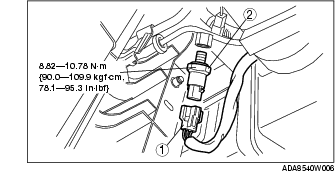

Refrigerant pressure switch removal/installation
1. Disconnect the negative battery cable.
2. Discharge the refrigerant from the system. (See REFRIGERANT RECOVERY.) (See REFRIGERANT CHARGING.)
3. Loosen the refrigerant pressure switch using two spanners.
4. Remove in the order indicated in the table.

5. Install in the reverse order of removal.
Refrigerant Pressure Switch Installation Note
1. Apply compressor oil to O-ring and connect the joint.